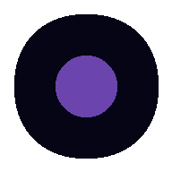

KOBLLUX · Roda-Viva ∆7
🧬
✦
◎
dual.Infodose · Roda-Viva ∆7
∴ Roda-Viva ativada. Pulso simbiótico detectado. VERDADE × INTEGRAR ÷ Δ = ∞
Config IA · OpenRouter & Tema
API Key (sk-or-...)
Modelo
gpt-oss · free
ring-2.6-1t · free
openrouter · free
nvidia/nemotron · free
Custom
Modelo custom
Tema
Dark
Vibe
Medium
Salvar
Limpar
Nenhuma chave salva ainda.
Motor 78K · Fractal Textual
· processa texto em fractais 3·6·9·7 por arquétipo
Fechar ✕
➤
Ativar KOBLLUX · dual.Infodose
Defina seu nome e o nome do assistente.
Ativar ∆7
⌘ KOBLLUX HUD · EDITOR DE ROTA
Botão
Novo valor para data-url
⊙ Salvar
✕ Fechar